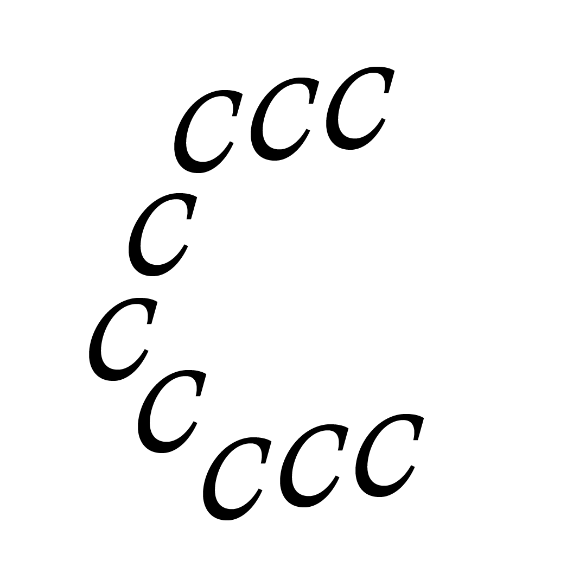

Club · Comunidad · Cambio
Venimos a crear un espacio donde puedas escucharte mejor. Un tercer lugar con membresía: personas en búsqueda y transición que se juntan regularmente para explorar con diferentes herramientas de creatividad, expresión y escucha interna.
Somos
Fraccctal es un club de Madrid para una comunidad que está en una transición vital y no quiere atravesarla sola.
Piensa en un club de lectura o de running, pero donde el tema no es un hobby sino la vida misma: gente que dejó un trabajo, terminó una relación, llegó a los 30-40 preguntándose si esto era todo. En vez de resolverlo solx con terapia, podcasts y autoayuda, nos encontramos en persona: talleres, encuentros, conversaciones curadas alrededor de cuatro ejes: placer, movimiento, conocimiento y espiritualidad.
Atravesadas por la epidemia de la soledad adulta y la crisis de propósito decidimos fundar Fraccctal. Los gimnasios resuelven el cuerpo, los coworkings el trabajo; no hay infraestructura para los vínculos. Fraccctal es eso: infraestructura social para quienes están en transición.
La objeción obvia
No prometemos cambios rápidos.
Creamos contextos para sostener el cambio potencial.
Cuatro ejes
El cuerpo, el disfrute y los sentidos.
Moverse juntxs, literal y figuradamente.
Talleres guiados por profesionales que te dejan pensando.
Sin etiquetas ni dogmas. Preguntas abiertas.
Próximamente
Un cupo cerrado de 20 personas. Gratis hasta el 31 de diciembre de 2026. Precio fundadora vitalicio desde enero: 11€/mes.
Quiero ser fundadoraLo que se paga en una membresía como esta es curaduría y continuidad: un grupo estable de gente afín, en vez de eventos sueltos con extraños. El club de lectura y el walking club están incluidos, sin coste aparte. Los talleres puntuales se pagan por separado.